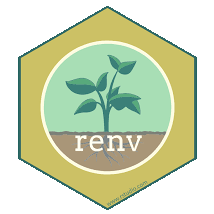
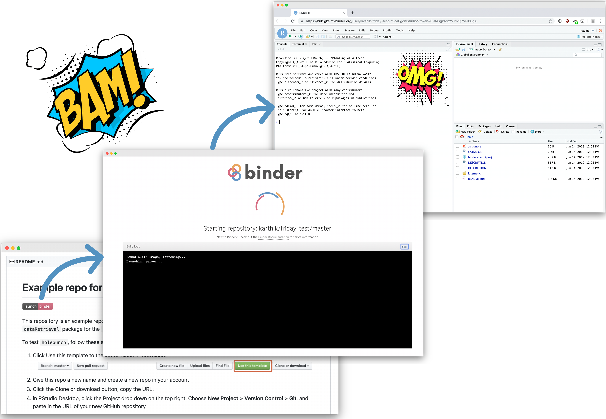
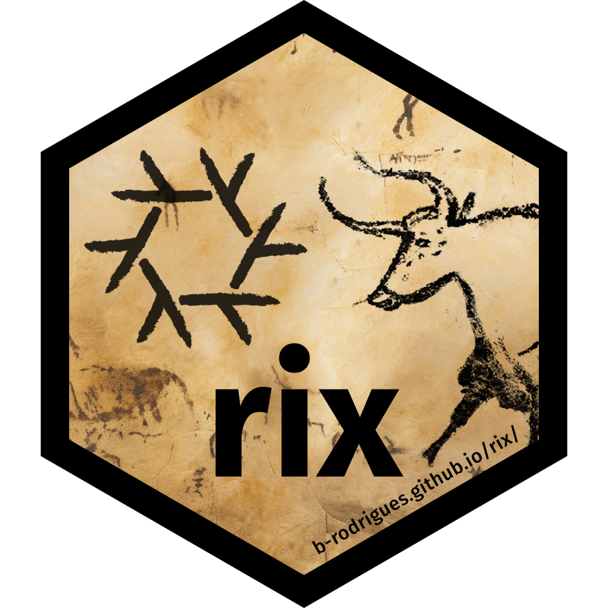

install.packages("renv")3 Containerization and version management
R and python use additional extensions (“packages”) to expand their basic functions for data analysis. However, differences in the versions of these packages can create compatibility issues, even when researchers are using the same version of R of python. Packages like renv and groundhog for R help to keep these versions consistent.
Beyond package management, maintaining compatibility across system requirements — such as operating systems and software versions — is critical for ensuring portability. Containerization tools like Docker and the holepunch package for R provide solutions by encapsulating scripts and their dependencies into isolated environments. To what extent JASP and jamovi will be backwards compatible in the future is not entirely clear.
To tackle both challenges simultaneously, the rix package offers an integrated solution, combining system requirements management with package version control to streamline reproducibility efforts.
Advantages
- Data analysis is sustainable over longer period of time
- Equal system environment between researchers
- Equal package versions between researchers
First easy steps
I recommend starting with ensuring the compatibility of package versions.
- If you want your workflows and particularly those of others to be altered the least,
groundhogmay be the better option (only minimal alterations with both) - In case you are using packages installed from github,
renvmay be the even more robust option (both are relatively robust)
Once you are confident in managing packages, you can proceed to address system requirements, such as standardizing software versions. See “Free resources” for holepunch and rix below.
Package management with renv (for R)
You
- Only once:
Installrenvby running
- Once per project:
Make sure you work within an R-project (and not with single files)!
Initiaterenvby running
renv::init()- Only in case you installed new packages:
Document these new packages by running
renv::snapshot()Others
- Install
renvby running
install.packages("renv")- Open the project they received from you
- To have the same package versions available, others need to run
renv::restore()
Package management with groundhog (for R)
- Only once:
Installgroundhogby running
install.packages("groundhog")- When starting RStudio:
Loadgroundhogpackage by running
library(groundhog)- When writing a script:
You can replace this
library(rio)
library(dplyr)with this using e.g. today’s date
groundhog.library("
library(rio)
library(dplyr) ", "2025-01-28")In contrast to renv, others do not need to know anything about groundhog. They can run your script, that will automatically install and load the specific packages.
Free Resources

Tutorial: renv
Tutorial: groundhog

Tutorial: Holepunch

Tutorial: rix
Foto by Marten Bjork on Unsplash